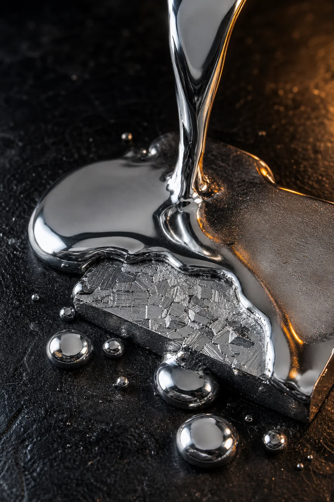
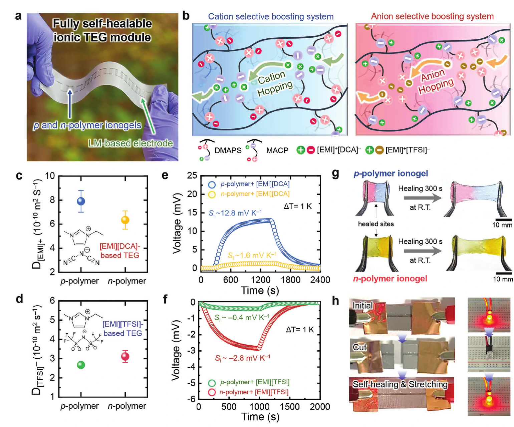
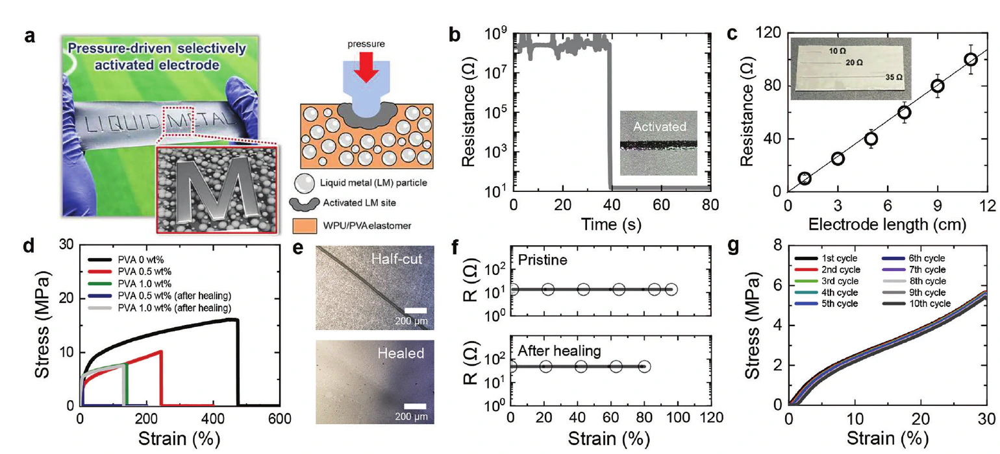
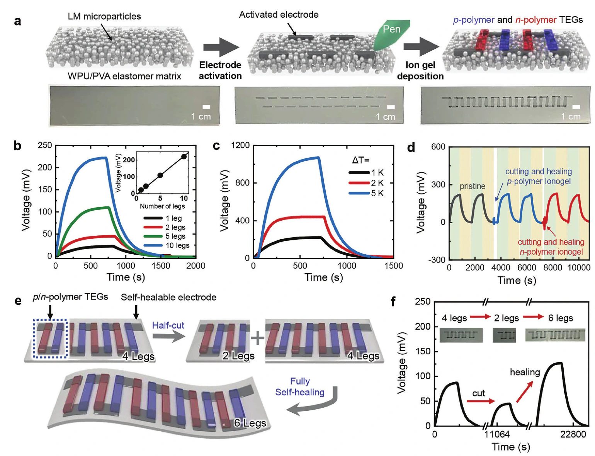
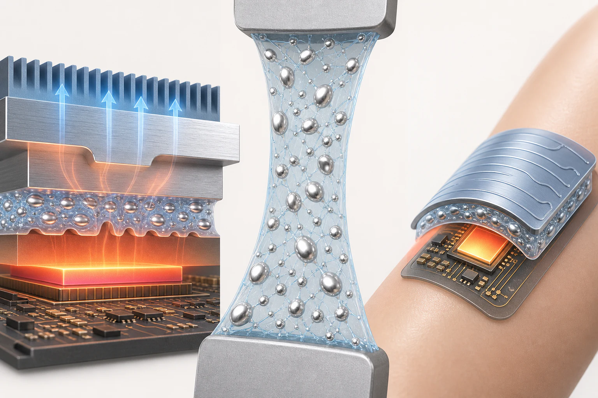

Materials & Process
Build the material system
Students work on synthesis, formulation, interfacial control, and process tuning rather than only running downstream tests.
Liquid Metals & Low-Melting Alloys
EMDP Lab primarily studies liquid metals and low-melting-point alloys as adaptable platforms for energy transport, soft electronics, and advanced materials processing.
We engineer alloy composition, interfaces, and phase transitions to turn fluid or easily processed metals into reliable device functions.

Materials & Process
Students work on synthesis, formulation, interfacial control, and process tuning rather than only running downstream tests.
Characterization
Electrical, thermal, and reliability measurements are treated as evidence for mechanism and process quality, not just a checklist.
Translation
The research is framed so material advances can support functioning devices, credible claims, and eventually strong publications.


Theme 01
Problem. Conventional through-connections and rigid conductors can fracture when soft substrates bend, stretch, or change shape. Liquid-metal vias offer a route to carry signals through compliant polymer structures while preserving electrical continuity.
Approach. The lab designs liquid-metal microdroplet networks, via formation, interface adhesion, and activation processes so conductive paths can be placed where flexible devices need them.



Theme 02
Problem. High-output ionic thermoelectric systems need controlled ion motion, while wearable devices must also survive damage, stretch, and repeated thermal cycling.
Approach. Zwitterionic copolymer ionogels selectively promote cation or anion transport, while a liquid-metal-based self-healing electrode connects p/n legs in series to create a reconfigurable output. Here, liquid metal functions as the deformable electrode; Theme 03 focuses separately on thermal-interface heat transfer.
Source paper. Ho et al., Zwitterionic Polymer Gel-Based Fully Self-Healable Ionic Thermoelectric Generators with Pressure-Activated Electrodes, Advanced Energy Materials 13, 2301133 (2023). DOI: 10.1002/aenm.202301133

Theme 03
Problem. Thermal interfaces must keep contact with hot and cold surfaces while assemblies bend, stretch, or move. Rigid pads and brittle interlayers can lose conformity as the geometry changes.
Approach. The lab studies liquid-metal/polymer composite TIMs that combine liquid thermal pathways with a compliant matrix, allowing the interface to deform, conform, and adapt to wearable and mechanically dynamic systems. The design questions span formulation, wetting and adhesion, interfacial resistance, and cycling reliability.
Student fit
If one of these themes is a match, the application process can focus quickly on defining a realistic first project and milestone.
Contact
333, Techno jungang-daero, Hyeonpung-eup, Dalseong-gun, Daegu, Republic of Korea, 42988
If you are interested in one of these themes, leave your email and the lab can follow up.